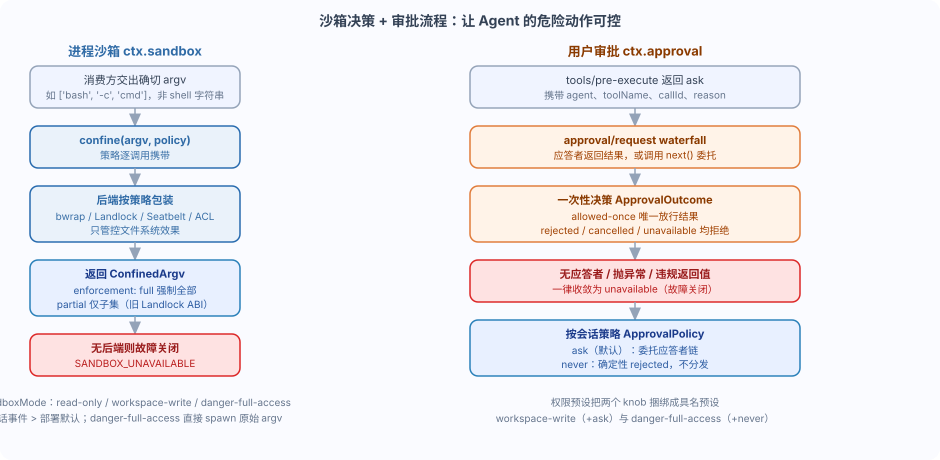

DeepSeek Harness サンドボックスと承認：Agent の危険な動作を制御可能にする
前の章ではツール実行パイプラインについて説明しました。その中で特に気になるのが 2 つのポイントです：サンドボックスがどうコマンドを制約するか、承認がどう「実行できるかどうか」を決定するか。
この章ではさらに深く掘り下げますctx.sandbox 与 ctx.approval2 つのサービスについて、それぞれの役割分担とフェイルクローズの原則を明確に説明します。
一言で言うと：サンドボックスは「コマンドがどの境界内で実行されるか」を管理し、承認は「この具体的な操作が許可されるかどうか」を管理します。どちらもデフォルトでフェイルクローズです。
まず全体を見る：サンドボックス決定 + 承認フロー
下の図は 2 つのサービスをまとめて示しています：左はサンドボックスが argv をどうラップするか、右は承認がどう一度きりの決定を行うかです。

それらは共通して同じ問いに答えます：Agent がリスクのあることをしようとするとき、どうそれを制約するか。
サンドボックスは「プロセスが触れることのできるファイル」を囲い込み、承認は「今回の操作を許可するかどうか」を応答者（answerer）の決定に委ねます。
ctx.sandbox：ポリシーに従って argv をラップする
プロセスサンドボックスのモデルは：消費者（consumer）が引き渡す正確な argv、バックエンドがファイル効果ポリシーに従ってそれをラップします。
重要なのは「正確な argv」であり、シェル文字列ではないということです——シェル形式の消費者は渡す必要があります['bash', '-c', command]。
ctx.sandbox.confine(argv, policy)返すのはConfinedArgv、すなわち「置換後の argv にバックエンドの強制実行の事実を加えたもの」です。
SandboxMode（サンドボックスモード）はファイルシステム効果のみを管理し、ネットワークとプロセスの可視性は含みません。
read-only：必要なデータ受信端（例： ）のみ許可し、書き込みは拒否します。
/dev/null：さらに、ワークスペースのルートディレクトリとバックエンドが約束した一時領域への書き込みを許可します。workspace-write：分離をバイパスし、消費者は ctx.sandbox を呼び出さずに元の argv を直接 spawn します。
danger-full-access最初の 2 つのモードのみがプロバイダーに送信され、
サンドボックスには一切入りません。danger-full-accessこれにより 1 つの安全特性が保証されます：制限付き実行は必ず
、無音の分離なし透過は常に不正です。ctx.sandbox強制実行の程度とフォールバック規則
強制実行の程度とフォールバック規則
バックエンドがそのモードで約束されたすべてのファイル効果を管理したことを示します；enforcement: 'full' | 'partial'。
fullサブセットのみを管理したことを示します。partial現在の部分的な強制実行の状況には、古い Landlock ABI、および Windows ACL runner の Everyone とハードリンク境界が含まれます。
絶対的な境界を要求する消費者は、
を「不十分」として扱い、拒否するか、この違いを上位に公開する必要があります。partialポリシーの解析には明確なフォールバック順序があり、公式ドキュメントはそれを 3 つの層にまとめています：
優先度
| ソース | 説明 | 最高 |
|---|---|---|
| 承認済みの明示モード | 一度きりの権限昇格リトライ時に渡される | 、セッションポリシーよりも優先されますmode次に |
| セッションの最後の | イベントsandbox/modeセッションログとともに永続化され、リプレイして再構築できます | フォールバック |
| デプロイメントのデフォルトモード | agent なしの呼び出しと cwd のないセッションは、設定されたルートディレクトリを使用します | 通常のツール呼び出しは、呼び出しセッションの不変の cwd から派生します |
root はまずファイルシステムのセマンティクスに従って正規化され、次に字句的正規化が行われるため、workspaceRoot。
を含む cwd は、プロセスが実際に実行されているディレクトリを識別します。symlink/..フェイルクローズ：利用可能なバックエンドがない場合、
がスローされます
ctx.sandbox.confine、エラーコードSandboxUnavailableError制限付きポリシーの下では、無音の分離なし透過は常に不正です。SANDBOX_UNAVAILABLE。実際に試す例：制限モードで bash を実行する
実際に試す例：制限モードで bash を実行する
実例
実例
// 1. 今回の呼び出しの完全なポリシーを解析：セッション cwd がワークスペースの境界です。
import type { Context } from '@deepseek-ai/cordis'
import { defineTool } from '@deepseek-ai/dsh-tools'
export const name = 'sandbox-demo'
export const inject = ['tools', 'sandbox', 'sandboxPolicy']
export function apply(ctx: Context) {
ctx.tools.register(defineTool({
name: 'sandboxed_echo',
description: 'Run echo inside the sandbox. The runoob demo command.',
parameters: {
text: { type: 'string', required: true, description: 'Text to echo' },
},
output: { schema: { type: 'string' } },
async execute(args, exec) {
// 2. 消費者は正確な argv（プログラムと引数）を渡します。シェル文字列ではありません。
const policy = ctx.sandboxPolicy.resolve({ session: exec.agent?.session })
// 3. danger-full-access は直接 spawn します。それ以外はサンドボックスのラップに任せます。
const argv = ['bash', '-c', `echo ${JSON.stringify(args.text)}`]
// ... spawn(argv) を実行し、出力を収集します
if (policy.mode === 'danger-full-access') {
const { spawn } = await import('node:child_process')
// デモ：正常に返却
return `echo ${args.text}` // 4. 制限モード：confine は置換後の argv を返し、バックエンドがない場合は SANDBOX_UNAVAILABLE をスローします。
}
// 5. 消費者は confined.argv を spawn し、confined.enforcement に従って full を要求するかどうかを決定します。
const confined = ctx.sandbox.confine(argv, { mode: policy.mode, workspaceRoot: policy.workspaceRoot })
説明：上記のコードはデモ用の参考実装であり、spawn と出力収集の詳細は省略しています。
if (confined.enforcement === 'partial' && policy.mode !== 'read-only') {
return { isError: true, error: { message: 'partial enforcement is not acceptable for runoob demo' } }
}
return `confined echo ${args.text} (enforcement: ${confined.enforcement})`
},
}))
}
本番レベルの消費者は
、spawn と結果の帰属を同時に担当します。
dsh-bash-sandbox本当の難しさは結果の分類にあります：「サンドボックス runner の失敗」と「サンドボックスは正常に動作するが拒否された」を区別する必要があります。サンドボックスはさらに 2 つの直交する stderr 分類子をもたらします：
：サンドボックスが正常に動作しているときに、制限付きコマンドがブロックされた状況を識別します（bwrap の EROFS テキスト、Landlock の EACCES、Seatbelt の EPERM）。
denialSignatures：runner がコマンドを実行する前に拒否または失敗した状況を識別します（Landlock の失敗は終了コード 125 と 1 行の致命的な診断を要求します）。
runnerFailureRules消費者は、runner の失敗を通常のタスク失敗としてではなく、まずサンドボックスインフラストラクチャの障害として報告する必要があります。
ctx.approval：一度きりの権限決定
ctx.approval：一度きりの権限決定
この具体的な操作を続行してもよいか？それは
waterfall を介して問題を応答者（answerer）にディスパッチします。approval/request応答者はそのリクエストを担当する場合に結果を返し、それ以外の場合は
に委任します。最初の応答者が唯一の決定スロットを占めます。next()結果タイプ
は閉じています：ApprovalOutcome結果
| 意味 | 呼び出し側の動作 | 一度きりの許可 |
|---|---|---|
allowed-once | 唯一の許可結果であり、尋ねられたその 1 つの操作のみを承認します | 明確な拒否 |
rejected | 拒否 | リクエストが撤回された（例：signal による中断） |
cancelled | 拒否 | 応答者なし、応答者が例外をスロー、または戻り値が非準拠 |
unavailable | フェイルクローズ、すべて拒否 | 重要な安全特性：応答者の欠落、そのリクエストの非担当、例外スロー、または非準拠の応答者は、いずれも「拒否」を生成し |
、許可ではありません。unavailable呼び出し側は、
一律に拒否を実行します。rejected、cancelled 和 unavailableセッション別の承認ポリシー：ask と never
セッション別の承認ポリシー：ask と never
ApprovalPolicyポリシー
| 動作 | 典型的なシナリオ | （デフォルト） |
|---|---|---|
ask構成された応答者チェーンに委任します。応答者がない場合は、 | インタラクティブ UI にフォールバックし、人間が決定する必要があります。unavailable | 決定的に返す |
never | 、いかなる応答者もディスパッチしませんrejectedCI、無人実行のための厳格なヘッドレス姿勢 | 有効値は、セッションログの最後の |
イベントであり、サービス構成にフォールバックします。approval/policyが唯一の書き込みパスであるため、リプレイによって上書き値を再構築できます。
setApprovalPolicy(session, policy)サービス内部で、waterfall ディスパッチの前に強制されるため、後から
neverを使って登録された応答者でもそれを迂回できません。prepend監査とモデル可視性の違い：承認の監査イベントペア（
）はログにのみ書き込まれ、モデルの transcript には入りません。
approval/asked与approval/decidedモデルに見える動作は、呼び出し側が派生したツール結果と現在のランタイムコンテキストのスナップショットです。権限プリセット：2 つのノブを束ねて名前付きプリセットに
権限プリセット：2 つのノブを束ねて名前付きプリセットに
サンドボックスモード（sandbox/mode）と承認ポリシー（approval/policy）は相互に独立した 2 つの knob です。
権限プリセット層ctx.permissionPresetsそれらを名前付きプリセットに束ね、クライアントが単一の「権限」セレクターとして提供できるようにします。
| プリセット | サンドボックスモード | 承認ポリシー | 意味 |
|---|---|---|---|
workspace-write | workspace-write | ask | 書き込み可能なワークスペース、機密操作はユーザーに確認する |
danger-full-access | danger-full-access | never | サンドボックスをバイパス、確認なし、破棄可能な環境でのみ実行可能 |
プリセットテーブルは設定駆動型で、デフォルトテーブルには上記の 2 つが含まれます。名前はcustom「派生した非プリセット状態」のために予約されています。
current(events)2 つの knob から実際に有効なプリセットを折りたたみます。プリセット自身のイベントだけを見るのではありません。
2 つのプリセットが同じ knob の組み合わせを共有する場合、permission/presetイベントにより、current()ユーザーが選択したのが結局どちらであるかを保持できます。
重要：権限プリセットは、実際に管轄する能力のみを記述します。
公式インシデントレビュー 0002 でも警告されています：組み合わせ時のファイルシステムアクセスは、実行時の bash-only プリセットに安全に従うことはできません。
runoob 本番環境では、
danger-full-access使い捨てで破棄可能なサンドボックス環境にのみ割り当てるべきです。
まとめと自己テスト
サンドボックスと承認は「能力境界」と「決定権限」を分離します：サンドボックスはファイル効果ポリシーで argv をラップし、承認はウォーターフォール式レスポンダーで一度きりの通過を許可します。
自測問題：
| 質問 | 参考 |
|---|---|
消費側が実行したいのはdanger-full-accessモードの場合、ctx.sandbox を呼び出しますか？ | いいえ、元の argv を直接 spawn し、サンドボックスには入りません |
| 承認チェーンにレスポンダーが 1 つもない場合、結果はどうなりますか？ | unavailable、フェイルクローズ、呼び出し側は拒否 |
| CI で「絶対に確認しない、すべての承認を決定的に拒否」したい場合、どの戦略を使いますか？ | approval/policy: never |
クリックしてノートを共有
<p style="font-size:14px;">ノートは本記事の内容拡張である必要があります！</p><br> <p style="font-size:12px;"><a href="../tougao.html" target="_blank">記事投稿は、ここをクリック</a></p> <p style="font-size:14px;"><a href="../w3cnote/runoob-user-test-intro.html" target="_blank">登録招待コードの取得方法</a></p> <h3 class="text-muted"><i class="fa fa-info-circle" aria-hidden="true"></i> ノートを共有する前に<a href=";.html" class="runoob-pop">ログイン</a>が必要です！</h3> <p><a href="../w3cnote/runoob-user-test-intro.html" target="_blank">登録招待コードの取得方法</a></p>